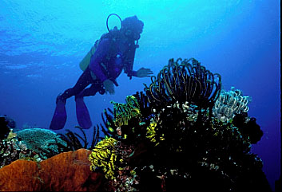
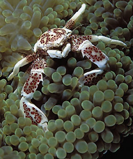

| Home / Dive Resorts / Live-Aboards / Snorkeling / Who We Are / Book a Trip |
|
|
|
|
|
|
|
|
|
|
|
|
© Copyright U.S. Dive Travel Network.
INDONESIA, MINAHASA PENINSULA --
SULAWESI ISLAND / MANADO:
NUSANTARA DIVING CENTER
[ Prices are Subject to Change. Please call 952-953-4124 for details. ]
Add 30 % for solo-occupancy packages.
No triples booked for this dive package.
Your Nusantara Diving Center Package includes: 7 nights lodging in a friendly, peaceful 2-star inn in the seaside village of Molas near Manado, the main city at the extreme northern tip of Sulawesi, once known as Celebes island. This is the renowned Minahasa Peninsula, which has become such a focal point for savvy adventure divers. Your room, one of only 40 in a rustic seaside lodge, is small but clean & comfortable; & it offers air conditioning, hot shower & easy access to the gardens & grounds. Nusantara Diving Center also will provide you with 3 superb home-cooked meals per day (Indonesian food is addicting!) + 2 guided boat dives daily (tanks, weights & guide included) + free airport transfers in Manado + sales taxes is covered. International air tickets to Bali, then to Manado, are extra. Moderate USDT tariffs & wire transfer fees are also extra on all Indonesia diving packages. This is a humble but decent 2-star property, we want to be candid. But the spirit of kindness & service; & the exceptional clarity of the reef diving, make Manado diving one of the world's scuba jewels. There are surely a couple Manado dive resorts that are fancier, but none with the same family feel & relaxing ambience.
U.S. Dive Travel has an excellent working arrangement with major wholesalers for Singapore Airlines -- for air tickets from the U.S. West Coast to Bali, then on to Manado. When seats are available (& they sell out early) we can often secure the lowest airfares in the open market for Indonesia diving tours. We also can easily arrange affordable add-ons from most major U.S. cities to L.A. Call us for quotes & details about this extraordinary destination. When you consider the outstanding purity of the Bunaken Islands' reefs, there are only a handful of islands anywhere on the Pacific Rim that can match the value of Manado, Sulawesi's lodging & diving prices. And Manado dive packages are one key nerve center of the burgeoning Indonesia diving scene today.
By way of background: many of our scuba diving clients have been traveling for 15 or 20 years, some for longer; & they've seen a fair share of the world's best diving islands. So every year we send our agents & partnership associates to exciting new spots, hoping to sift out that one gleaming island gem that everybody seems to crave. We're always scouting for the next darling of the daring diver set. In select company now with Palau's outer islands, the southern Red Sea, Northeastern Fiji, Papua New Guinea by vessel, & a couple more sites that are up for grabs, we hereby declare our opinion that Manado's islands rank it solidly among the Top Seven Most Beautiful Dive Destinations in the World. Every single person we have sent to Manado, Sulawesi Island, in Indonesia has returned with glowing slides & glowing tales of the friendly people, the exotic glow of the culture, the economical prices & the awe-inspiring reefs. Nusantara Diving Centre is a winner all around. Sure, the rooms are humble, you have no cable TV or fancy accommodations, & the meals are simple Asian family fare. But the service is uncommonly gracious & the Nusantara staff will bend over backwards to please you -- all you have to do is ask.
The Bunaken Island cluster -- five main atolls & several smaller satellite seaknobs -- only recently opened to international divers. These Bunaken Islands are zealously protected by two Indonesia National Parks that subsume nearly 14,000 hectares of living reef. One epicenter of Indonesia diving, the Bunaken Islands are located 30 water minutes to the Northwest from Manado, just North of Sulawesi's trademark "Special K" Minahasa Peninsula, & smack dab in the center of the great Indonesian Archipelago.
It's relatively simple to reach Manado, Sulawesi -- yet just hard enough to keep the stomping masses away. From L.A. we fly you to Bali, find you a budget room overnight, then the next morning we scoot you Northeast for several hours by commuter plane & -- zip -- you're in Manado. Nusantara Diving Center's gracious staffers pick you up at the Manado Airport & whisk you out to Molas Beach area for a nice meal, refreshments & a rest. The next day you're out bright & early in Nusantara Diving Center's quaint old wooden boats, powered by 40HP putt-putts, heading for islands as glorious underwater as they were when Columbus was teething. Indonesia diving has few isles to offer that can match this exceptional marine life diversity & color. While Indonesia diving is still in a stage of infancy on most islands, Sulawesi diving, & Manado diving in particular have been in full swing -- & safely so -- for several years now. So what makes Sulawesi diving so special? Why, we are so glad you asked....
*****************************************
Michael R. Goodman of Hopkinton, MA is a good friend of ours who has shared some exceptional underwater images from his recent dive trip. A longtime globetrotter who's visited many exotic nations around the world, Mike "The Master Enthusiast," as we like to call him, spends countless hours pursuing his passion of underwater photography; & the hard work pays off. He has refined a keen eye for this difficult artform. Mike uses a Nikonos camera for his wide-angle shots & a Sea & Sea housed Nikon for his macro shots & fish portraits. Michael R. Goodman has won numerous awards for his land-based photos, as well, including the Boston Globe's Annual Photography Contest, & various photographic salons for the Photographic Society of America. His images have been published in books, calendars & music albums. Mike is a past president of the Boston Camera Club; he has judged international competitions & has taught photography. A guy whose sense of humor is as sharp as his travel judgment, Michael supports his photographic habit (& his family!) by working as an international management consultant.
HERE are some MICHAEL GOODMAN PHOTOS from the BUNAKEN ISLANDS !
|
|
 |
|
|
|
|
|
 |
*****************************************
On two separate Indonesia diving trips since 1995, we sent three agents here to Manado, Sulawesi for an in-depth property & dive-site inspection. They returned from Central Indonesia with fire in their eyes, awesome slides & endless stories about reef preserves that are certainly among the world's most beautiful. Our agents confirmed that all the enthusiastic new buzz about Manado, in the dive-travel world's backstage, is true! They said they were treated with warm hospitality & gracious attention at Nusantara Dive Centre. But the scuba diving was the best part. The wildly colorful, fish-laden reefs of the Bunaken Islands are among the most vivid & inspiring dive sites they have seen anywhere in the world. Indonesia diving has barely begun to be tapped for the inspiring adventure resource that it offers future scuba diving generations.
Few U.S. or Canadian divers ever visit these wilderness reefs. The Bunaken Islands are one of the few remaining frontiers of truly virgin diving left -- anywhere. It's only the international air tickets (in the $1,200 ballpark from L.A.) & the Bali overnight that keep Manado from becoming a new Cancun or Waikiki. And frankly, we're glad about that. Manado dive packages are still a total treat for even the most veteran globetrotters, who fear they've seen & done it all. And in our studied opinion, Nusantara Diving Centre is THE value destination among Manado dive resorts, & Sulawesi diving operations in general.
Here's why. Each of the five main isles in the Bunaken Island Group are ringed in part by a lovely white-sand beach. Just a few meters offshore, in shallow water, is a band of eye-catching reefs, then in the 60-to-120-foot zone there's another band of coral reefs that are resplendent with small & large fish, all brilliant in hues & decoration, swimming around you in dizzying numbers, almost bouncing off your wetsuit. Most of the year, when the monsoons are away, the Bunaken Islands' water is calm & clear -- usually about 100-foot "viz" & temps in the 83-86 degree F range. When the monsoons, or occasional rainstorms hit, Nusantara guides will head south of the Minahasa Peninsula to the protected Lembeh & Pulau Dua islands in the Moluccan Sea of North-Central Indonesia. The scuba diving is just as fabulous there as it is to the North in Sulawesi. Getting excited yet? Here's a little more about Indonesia diving.
The predominate underwater geology & coral environment around the Bunaken Island Group is mind-numbing in its beauty. Our agents say they have never seen anything like it on Earth, perhaps with the exception of Papua New Guinea & the Red Sea. Manado diving, Sulawesi diving, is a nearly psychedelic experience, they report. The way they experienced their Manado diving, in the Bunaken islands Group, was to first dive in & encounter a shallow plateau, perfect for easy snorkeling in 10-20 feet of bathtub-warm water, then abruptly a short way from shore the reef plummets down the side of great walls that are sliced open by huge rifts & caves, each of which is festooned with amazing masses of hanging soft corals, red & orange sponges, Christmas tree worms, tube sponges, fields of exotic hard corals along the flatter niches, huge billowing sea fans, vast beds of gleaming anemones riddled with nippy clown fish, giant crinoids & tunicates, sea whips, wild little nudibranchs & assorted little slithery weird-city mollusks that defy description.
But there's even more to Sulawesi diving & snorkeling, & Manado diving & snorkeling in particular. In the thousands of little nooks along the wall you'll spy delicate pencil-thin blue-ribbon eels, clear & reddish-striped coral shrimp, lurking lobsters & scuttling crabs. In deeper waters you can see schooling pelagics that will really get your heart started, as if it wasn't hammering with adrenal jazz already. On typical dive tours to the Bunaken Islands, you'll come face to face with a plethora of Napolean wrasse, turtles, rays of every dimension & specie, tunas, barracudas & the occasional shark to keep your air flow smooth & regular. Go on a night dive & multiply the awesome colors & species diversity by three. You'll be in visual satori. As if this wasn't enough, there are a few old WWII shipwrecks to explore in less than 90 feet of ocean. But there's even more to Sulawesi diving.
The Bunaken Islands are ideal for snorkelers, as well as scuba divers, but be prepared to become so involved in the colors & life you'll see that you'll probably need a couple weeks here to even scratch the surface of your new passion. One week in Manado, Sulawesi won't do. A rare find among the many Indonesia dive resorts, Nusantara Diving Center will grow on you & won't want to leave for home. Our clients have shared this feeling year after year.
MORE EYE-CANDY PIX by MICHAEL GOODMAN, from the BUNAKEN ISLANDS!
|
|
|
|
|
|
|
|
|
****************************************
Your dive tours to Indonesia dive resorts can offer so much more than just great scuba diving. When you get tired of this submarine beauty (As if!) there are many fine side tours to take on Sulawesi island. This remarkable Old World island offers all of the charms, from mountains & jungles to remote shy little villages, that most any other island in Indonesia might have; & it's all right here for you within easy 1- to 2-day drives of the city. It's all right here for your enjoyment. And the people of Sulawesi are perhaps the best part of the scuba diving or snorkeling vacation. We know the owners of Nusantara Diving Center, the Herlambang family, & they are kind & gentle-spirited people for whom TLC service is an art form. You will really love this family & its easygoing ways. These folks are salt of the earth. It is because of them that Nusantara Diving Center is wonderful to visit, a real keeper among Indonesia dive resorts.
In the Minahasa Peninsula Region of Sulawesi, you'll find volcanoes to climb, a rainforest with dozens of odd species to tantalize your binoculars, including pig deer, dwarf buffalo, exotic butterflies & the tiny tarsius, at 8 inches tall the smallest meat-eating monkey in the world. There are hot springs, lakes, plantations of vanilla & nutmeg & cinnamon & even some classic city pleasures. Though still a small town at heart, Manado, Sulawesi affords you wonderful Asian cuisine at rock-bottom prices, plus tennis, golf & excellent practitioners of Asian massage. Ah, just thinking of it..... The Nusantara Dive Center, while not a 3-star luminary among Indonesia dive resort, has a lot of creature comforts for the very low price. Nusantara also offers a mini bar, traditional kolintang music, sauna, steambath, fitness room, volleyball court, table tennis, billiards, motor scooter rentals & game fishing charters.
You won't believe the prices down here. Manado is like something from the '50s, with all the charm & economy & unspoiled innocence wrapped up in one gratifying bundle.
Open since 1975, the divemasters at Nusantara Diving Center were pioneers in developing the Bunaken Islands for scuba vacation enthusiasts who were hungry to visit Sulawesi dive resorts. Ten years after they started, the owners of Nusantara were honored by Indonesia's president with the Kalpataru Award, that nation's highest honor for environmental conservation. The Herlambang's dedication to protecting the rare resources of Sulawesi's reefs is one main reason why we represent Nusantara Diving Centre with a little extra brio. It is their courage & ecological caring that in large part has saved the Manado-area reefs from the destruction of dynamite fishing & exploitive commercial fishing, greedy enterprised that have plagued most of Southeast Asia, & many Sulawesi dive resorts, for years.
The best time to visit Manado, Sulawesi is from mid-April through September. During the West Monsoon Season -- from December through February -- there's a lot of rain, variable winds & storms that can stir up some hefty chop. Even then, the bad weather only lasts for a few days at a time. Manado seems poised to become a world Mecca for serious scuba divers & skin divers. We only pray that new visitors treat the land, the reefs & the local people with the same gentle decency that Sulawesi Indonesians seem to have bred into their beings. This is an island that's been kissed by God; & its glow has never dimmed for all these centuries. Nusantara Diving Centre is one of our best-loved little Sulawesi dive resorts; we think you will agree. Go lightly, go soon. Have the time of your young life!
FOR MORE INFORMATION or RESERVATIONS:
Please feel free to contact:
John Hessburg, General Manager
Susan Hessburg, Operations Manager
U.S. DIVE TRAVEL Network
PMB 307 / Suite # 116
15050 Cedar Avenue S.
St. Paul, Minnesota 55124-7046
Voice Mail: 952-953-4124
Fax Line: 952-431-5023
E-mail: divetrip@bitstream.net
Website: www.usdivetravel.com
******************************************************
IMPORTANT REMINDER about PRICES & TARIFFS:
All dive package prices listed for Manado dive resorts are subject to possible change in this steadily evolving travel market. Lodging, side tour & diving prices are traditionally stable, while air prices can fluctuate daily. Until air tickets are issued, all airlines reserve the right to change airfares without notice -- an industry standard per FAA rules. We at U.S. Dive Travel will price-protect you to the utmost of our professional ability; & that has been our pledge for one decade now. Our tropical vacation experts normally secure excellent wholesale discount air tickets for our clients who book early enough to nab limited seats in the best price categories. Remember please, the federal government has deregulated all U.S.-based airlines, so only they control their pricing -- not any travel professionals. Early is good when seeking the best air ticket rates for your scuba diving & snorkeling vacations.
Unless specifically noted, these above scuba diving packages are prices for only the land-based portion of the dive resorts, in most cases reflecting double-occupancy rooms. At many dive resorts, there will be no triple-occupancy rooms offered. Some exceptions will be noted. International air tickets & commuter "island-hopper" seats are always extra above these land costs. Nominal service fees are also extra for air tickets & the vessel + side tour components. The baseline tariffs for all clients, on all our scuba diving & snorkeling vacations, start at $35 per person for the land portion + $20 pp for the air tickets. Late-booking clients may receive slightly higher tariffs on the lodging + diving at many of our dive resorts. Solo clients will always pay a single supplement to secure a private room -- normally 35% to 50% more than the standard double-occupancy rate at some dive resorts.
The preferred payment mode for all of our dive resorts, side tours & air ticket specials -- on all scuba diving & snorkeling vacations -- is by cashier's check or wire transfer in U.S. dollars. All clients living outside the USA or Canada will need to pay for their dive vacations via direct wire transfer only. No personal checks can be accepted for the land portion of any reservation. Thank you for your gracious understanding. Our service level is the highest & our prices the lowest in this industry, & thus we need to preserve a reasonable margin. For published-fare air ticket bookings, USDT always accepts Visa & Mastercard. For ultra-discount wholesale air tickets, USDT accepts only cashier's checks or wire transfers, please.
Remember, all tropical vacation clients to all foreign destinations will be asked by local officials overseas, upon departing the airport on your final day, to pay a nominal government departure tax, usually between USD $25 - $40 per client. USDT cannot collect this tax beforehand, so you simply pay it down there, in your host country. Be sure to stash away a little cash for this final moment at the airport, so you'll get your exit visa stamped quickly with no fuss; & away you go. Best of luck with your dive travel plans. We hope all your scuba diving & snorkeling vacations are safe & satisfying adventures. Blessings & best wishes with ALL your dive vacations.
Best fishes too!
>////*> <*\\\\<
John Hessburg & Susan Hessburg, Mgrs.
U.S. Dive Travel Network.
| Home / Dive Resorts / Live-Aboards / Snorkeling / Who We Are / Book a Trip |
© Copyright U.S. Dive Travel Network.